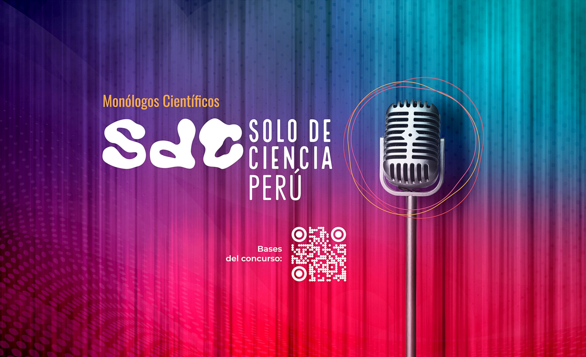
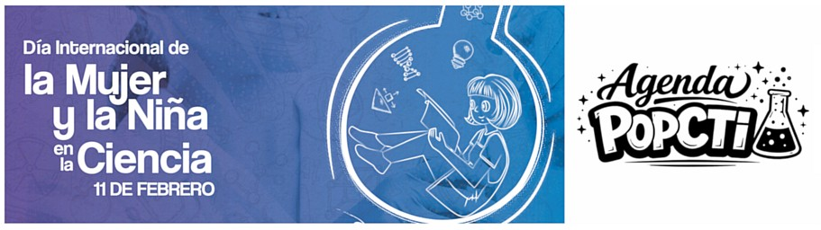
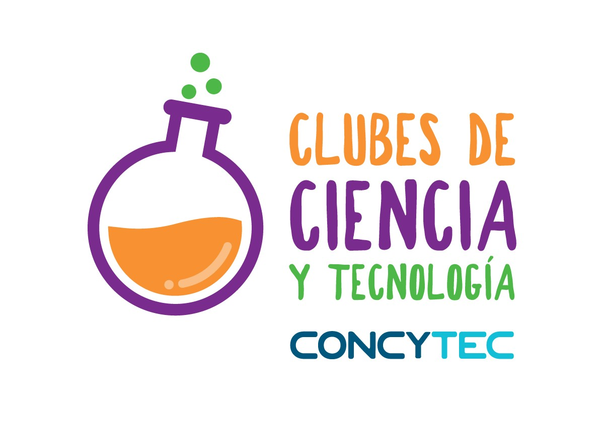
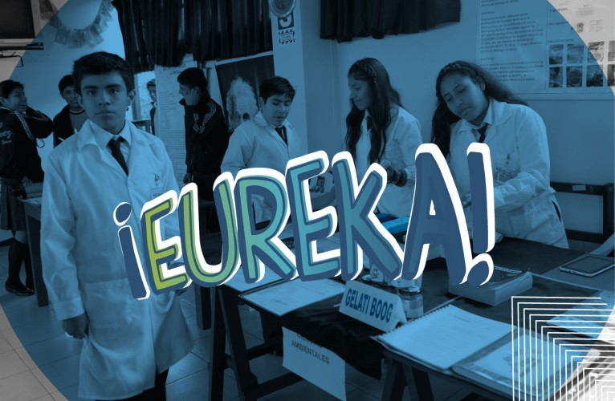
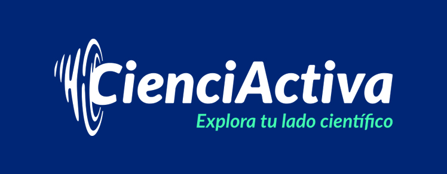

Promovemos la divulgación científica, tecnológica y de innovación en todo el Perú.
Explorar actividades
Concurso de monólogos científicos.

Actividades de divulgación científica a nivel nacional.

Espacios extracurriculares de aprendizaje, exploración e indagación para estudiantes.

Feria Nacional Escolar de Proyectos de Ciencia y Tecnología.

Plataforma virtual educativa, orientada a la divulgación de la ciencia y la tecnología.
Explora eventos científicos en todo el territorio nacional.
Abrir observatorioVideos de lo mejores canales de divulgación científica en español e inglés.
Ver canales